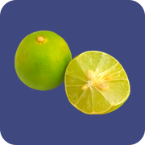
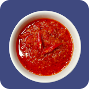
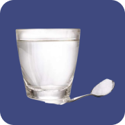
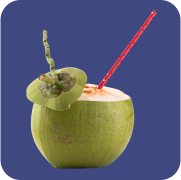

Hasil
Analisis feses Anda menunjukkan sedang diare.
Masalah pencernaan yang mungkin sedang diderita adalah:
diare, muntaber, disentri, keracunan makanan, atau infeksi bakteri
1
Hindari makanan dan minuman yang pedas atau asam, seperti:
Kopi
Seblak
Jeruk
Sambal
Rujak
2
Perbanyak minum air mineral, minimal 8 gelas atau 2 liter sehari

3
Minum larutan oralit atau air kelapa untuk menggantikan cairan tubuh agar tidak dehidrasi

Larutan Oralit
Air Kelapa Muda
4
Beristirahat dan mengurangi aktivitas fisik
Jika Anda mengalami buang air besar (BAB) sebanyak lebih dari 5 kali sehari atau terjadi pendarahan, segera pergi ke dokter terdekat untuk mendapat penanganan lebih lanjut dan mengonsumsi obat diare.